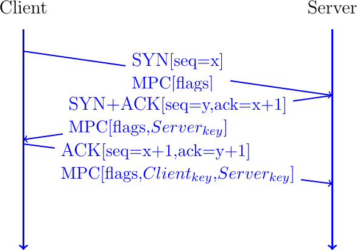
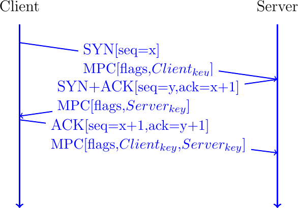
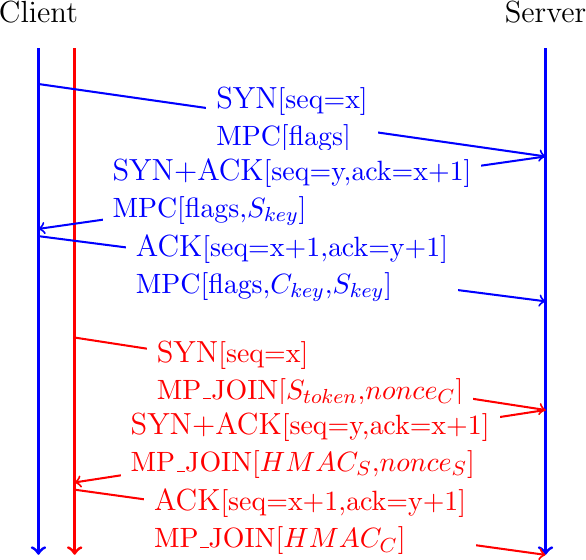

Multipath TCP¶
Todo
all the details behind MPTCP
Todo
focus on MPTCP version 1 and briefly explain version 0
Multipath TCP [5] is an extension to the TCP protocol [5] that was presented earlier. We start with an overview of Multipath TCP. Then we explain how a Multipath TCP connection can be established. Then we analyze how data is exchanged over different paths and explain the multipath congestion control schemes. Finally, we explain how Multipath TCP connections can be terminated.
An overview of Multipath TCP¶
Connection establishment¶
A Multipath TCP connection starts with a three-way handshake like a regular TCP connection. To indicate that it wishes to use Multipath TCP, the client adds the MP_CAPABLE option to the SYN segment. In the SYN segment, this option only contains some flags and occupies 4 bytes. The server replies with a SYN+ACK segment than contains an MP_CAPABLE option including a server generated 64 bits random key that will be used to authenticate connections over different paths. The client concludes the handshake by sending an MP_CAPABLE option in the ACK segment containing the random keys chosen by the client and the server.

Fig. 29 Negotiating the utilization of Multipath TCP during the three-way handshake
Note
Multipath TCP version 0
The first version of Multipath TCP used a slightly different handshake [9]. The MP_CAPABLE option sent by the client contains the 64 bits key chosen by the client. The SYN+ACK segment contains an MP_CAPABLE option with 64 bits key chosen by the server. The client echoes the client and server keys in the third ACK of the handshake.

Fig. 30 Negotiating the utilization of Multipath TCP version 0
The 64 bits random keys chosen by the client and the server play three different roles in Multipath TCP. Their first role is to identify the Multipath TCP connection to which an additional connection must be attached. Since a Multipath TCP connection can combine several TCP connections, Multipath TCP cannot use the IP addresses and port numbers to identify a TCP connection. Multipath TCP uses a specific identifier that is called a token. For technical reasons, this token is derived from the 64 bits key as the most significant 32 bits of the SHA-256 [44] hash of the key. The second role of the 64 bits keys is to authenticate the establishment of additional connections as we will see shortly. Finally, the keys are also used to compute random initial sequence numbers.
The main benefit of Multipath TCP is that a Multipath TCP connection can combine different TCP connections that potentially use different paths. Starting from now on, we will consider a client with two network interfaces and a server with one network interface. This could for example correspond to a client application running on a smartphone that interacts with a server. We explore more complex scenarios later.
We can know how a Multipath TCP connection can combine different TCP connections. According to the Multipath TCP specification, these connections are called subflows [45]. We also adopt this terminology in this document. Fig. 31 shows a Multipath TCP that combines two subflows. To establish the Multipath TCP connection, the client initiates the initial subflow by using the MP_CAPABLE option during the three-way handshake. At the end of the initial handshake, the client and the server have exchanged their keys. Based on their keys, they have both computed the token that the remote host uses to identify the Multipath TCP connection.
To attach a second subflow to this Multipath TCP connection, the client needs to create it. For this, it starts a three-way handshake with the server by sending a SYN segment containing the MP_JOIN option. This option indicates that the client uses Multipath TCP and wishes to attach this new connection to an existing Multipath TCP connection. The MP_JOIN option contains two important fields:
the token that the server uses to identify the Multipath TCP connection
a random nonce
The client has derived the token from the key announced by the server in the MP_CAPABLE option of the SYN+ACK segment on the initial subflow. Thanks to this token, the server knows to which Multipath TCP connection the new subflow needs to be attached.
Todo
discuss security concerns
The server uses the random nonce sent by the client and its own random nonce to prove its knowledge of the keys exchanged during the initial handshake. The server computes \(HMAC(Key=(Server_{key}||Client_{key}), Msg=(nonce_{Server}||nonce_{Client}))\), where || denotes the concatenation operation. It then returns the high order 64 bits of this HMAC in the MP_JOIN option of the SYN+ACK segment together with its 32 bits nonce. The client computes \(HMAC(Key=(Client_{key}||Server_{key}), Msg=(nonce_{Client}||nonce_{Server}))\) and sends the 160 bits HMAC in the ACK segment.

Fig. 31 MPTCP Join
Data transfer¶
Congestion control¶
Todo
explain basic idea and the problem of having